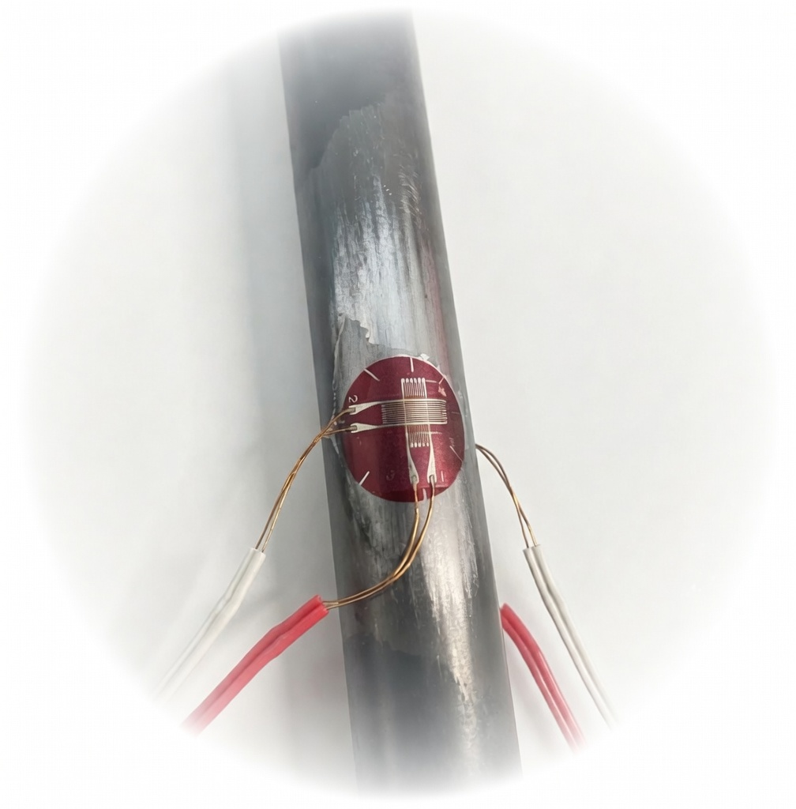
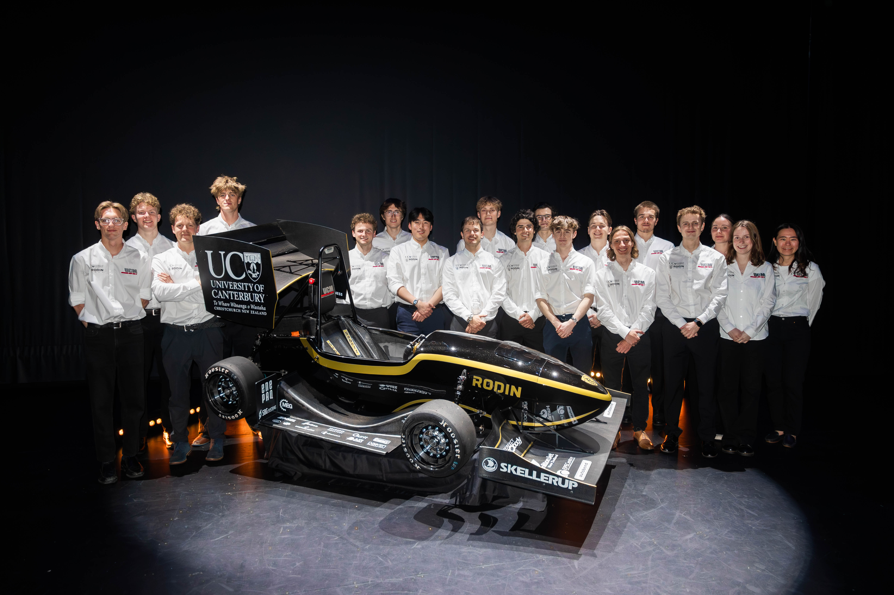
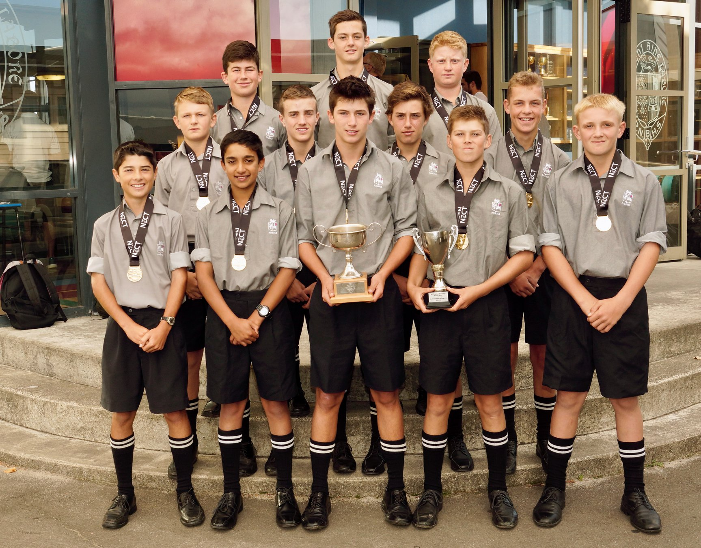

"To finish first you must first finish."

Great products work from understanding the real service conditions and applying appropriate factors of safety to components.
Mechanical engineer building practical systems understanding from first principles.
Previously led a technical subsystem on an internationally winning FSAE team.
Currently rotating through engineering, manufacturing, and operations in a graduate program.


St. Bede's College 1st XI Cricket Team

Cricket Team - 2019 Season

UCM24 Team

UCM25 Team